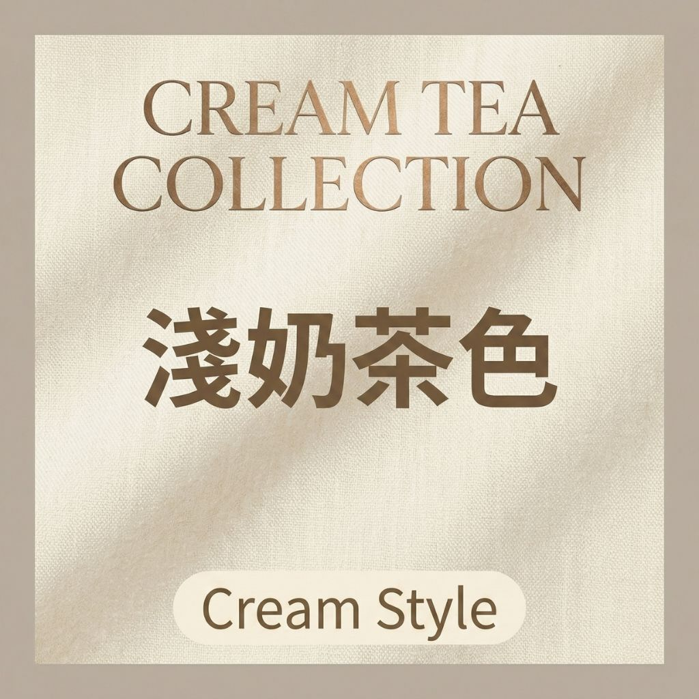
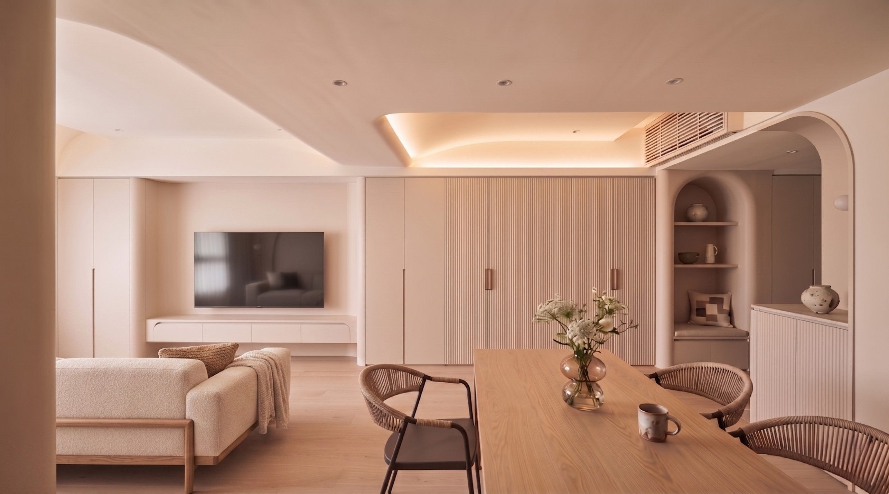
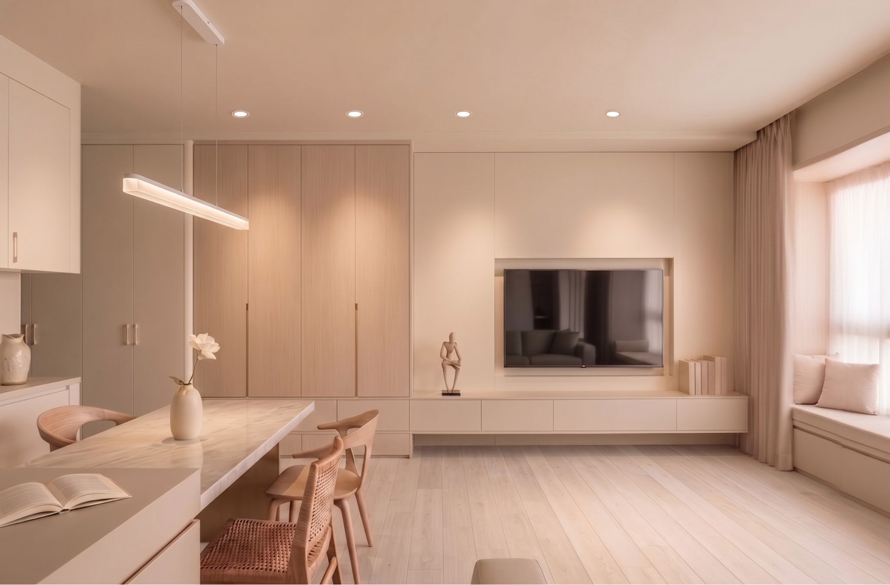
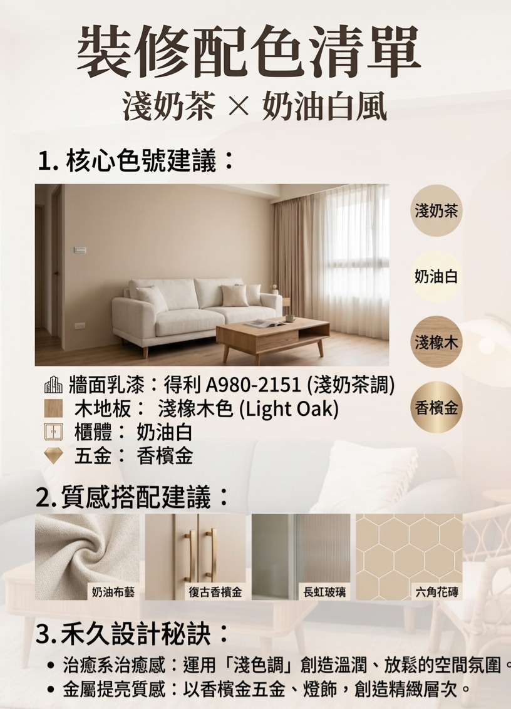
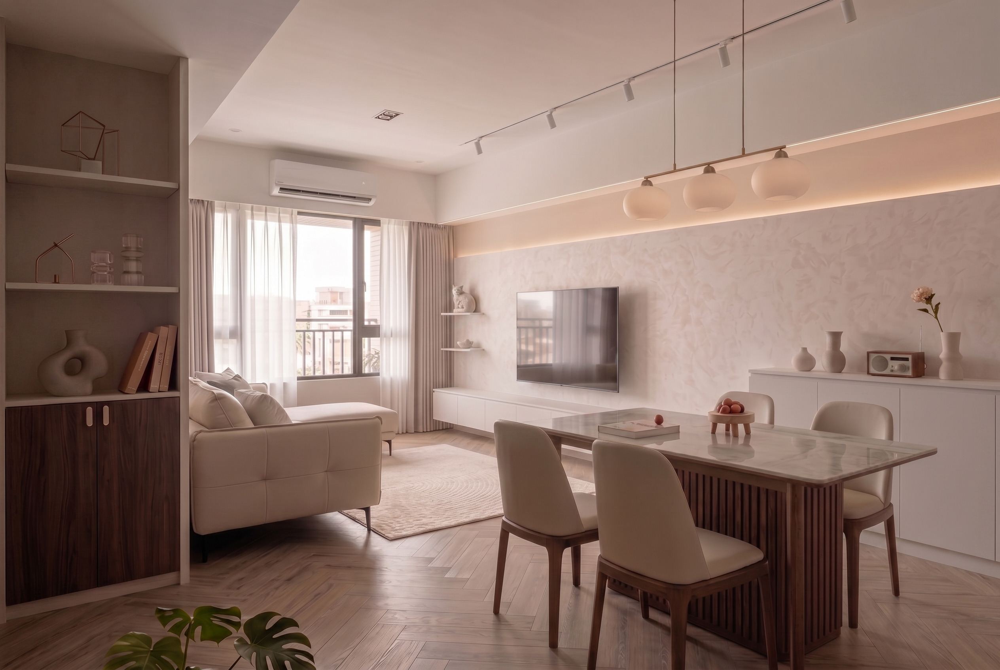

很多人喜歡韓劇裡那種乾淨、溫潤的「奶油系居家」，但最怕牆壁顏色刷完顯得舊舊黃黃。
其實，奶茶色是禾久設計詢問度最高的「冠軍色」。對於 15-20 坪的小坪數空間，它更是讓家裡視覺感放大一倍的神奇秘訣！

1. 拒絕「顯黃」的專業配方
為什麼別人家的奶茶色很高級，你的卻顯黃？
禾久的專業建議是選用 得利 A980-2151（淺奶茶調）。
這款顏色調性非常輕盈，刷起來清透自然，能跟奶油白的櫃子形成很細微、優雅的對比，讓空間看起來永遠清爽乾淨。


2. 清新配色指南
除了牆壁顏色，其他地方的配色也要對，才不會亂：
- 地板： 選用「淺橡木色」。淺色木地板能讓家裡看起來更亮，地坪看起來清透，心情也會跟著變好。
- 把手與開關： 推薦搭配內斂的「香檳金」。這種金屬色不俗氣，能增加一點點貴氣，很符合奶茶風溫柔的氣質。


3. 禾久的小秘訣：讓極簡更有質感
雖然全家顏色很一致，但我們利用一些小設計，讓家看起來「簡單但不單調」：
- 藏起光線： 捨棄大大的主燈，把燈光藏在天花板或櫃子邊邊。這種「隱藏燈光」打在奶茶色牆壁上，會有一種柔和的光暈，晚上回家超治癒！
- 視覺更俐落： 透過「櫃體懸空」 與 「隱藏邊條」設計，讓地板空間看起來更完整，不被雜亂的線條切斷。
- 摸得到的溫柔： 建議配一張羊羔絨沙發或棉麻質地的窗簾。雖然顏色一樣，但材質不同，家裡的質感就在這些細節裡體現出來。